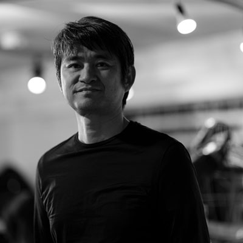

ビジョナリートーク：XR作戦会議〜未来に向けて何をすべきか？
講演情報
| 会場 | ベルサール秋葉原 ルームA |
|---|---|
| 講演形式 | 90分セッション |
| 講演日時 | 2019年12月3日(火) 16:00〜17:30 |
| 資料公開 | 予定あり |
| 動画配信 | YouTube |
| 写真撮影可否 | 可 |
| SNS投稿可否 | 可 |
講演概要
Oculus Riftの登場から7年、VRは徐々に普及が始まっています。AR/MRではスマートフォンを皮切りに、ウェアラブルデバイスが登場し始めました。
エンターテイメントのみならず産業活用も進んでいるVR/AR/MR（XR）分野では、果たして5年、10年先にはどんな未来が待っているのか。その担い手は何を考えていったらいいのでしょうか。
XR Kaigi 2019の基調講演となるビジョナリートークでは日本を代表する3名の業界キーパーソンが登壇。ディスカッションを繰り広げ、ビジョンを共有するとともに、未来に向けた作戦会議をお届けします。
講演者詳細
-
2013年、Googleの社内スタートアップとして発足したNiantic Labsの UX/Visual Designerとして参画、『Ingress』のビジュアル及びユーザーエクスペリエンスデザインを担当。2015年10月にNiantic,Inc. の設立と同時にアジア統括本部長に就任し、2019年に副社長となる。『ポケモンGO』では、開発プロジェクトの立ち上げを担当。
早稲田大学を中退後、2000年に渡米。ロサンゼルスでの起業、デザインプロダクション勤務を経て、2007年にGoogleへ入社。アジア太平洋のウェブデザインチームを統括、日本人としては世界で初めて「Doodle」をデザイン。東日本大震災時はクライシスレスポンスウェブチームを立ち上げた。2011年、米Google本社に移籍し、コンシューマープロダクトウェブデザインのグローバルチームを統括。 -
2010年株式会社エクシヴィ設立
2014年〜 Oculus Japan Teamの立ち上げに参画。Facebook Japan株式会社にて国内のVRの普及に務め、パートナーサポート、講演活動を行う。
個人でも”GOROman”としてVRの開発と普及活動を広く行う。2018年VRアニメ制作ツールAniCast を発表。東雲めぐ©GugenkaのSHOWROOM生配信に技術提供。エイベックスとアニメ制作のパラダイムシフトを目指すAniCast Lab.を設立。
著書「ミライのつくり方2020-2045 僕 がVRに賭けるわけ」 -

エンハンス CEO / シナスタジアラボ主宰
2014年、共感覚とXRテクノロジーの融合を目指すスタートアップ、エンハンス（Enhance）社を設立。「Rez Infinite」（2016）、「テトリス エフェクト」(2018)、音楽を光と振動で全身に拡張する「シナスタジア・スーツ」(2016)、共感覚体験装置「シナスタジアX1 – 2.44」（2019）など、新たな体験の拡張を目指している。
エッジ・オブ（EDGEof）共同創業者兼CCO、慶應義塾大学大学院メディアデザイン研究科（Keio Media Design）特任教授を兼任。
エンハンスWeb: enhance-experience.com